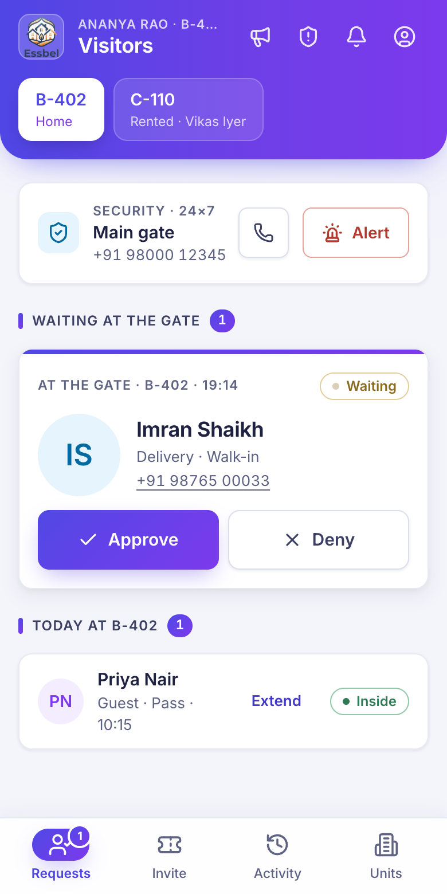
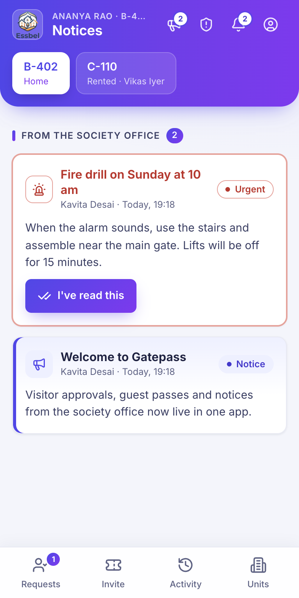
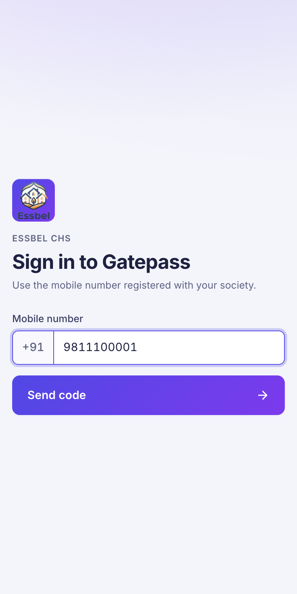
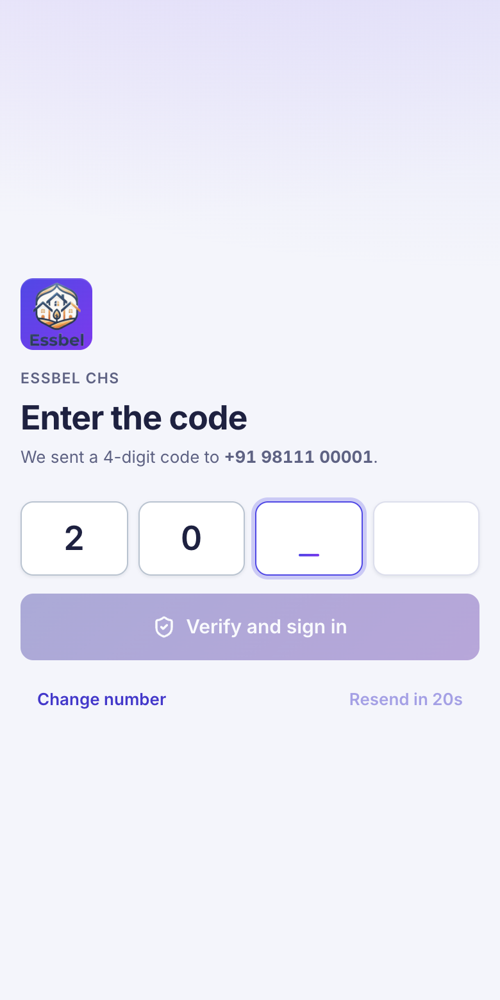
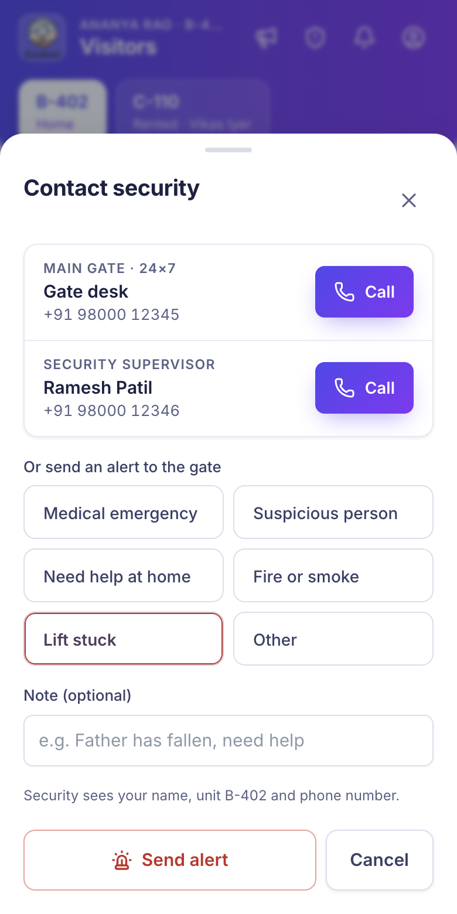
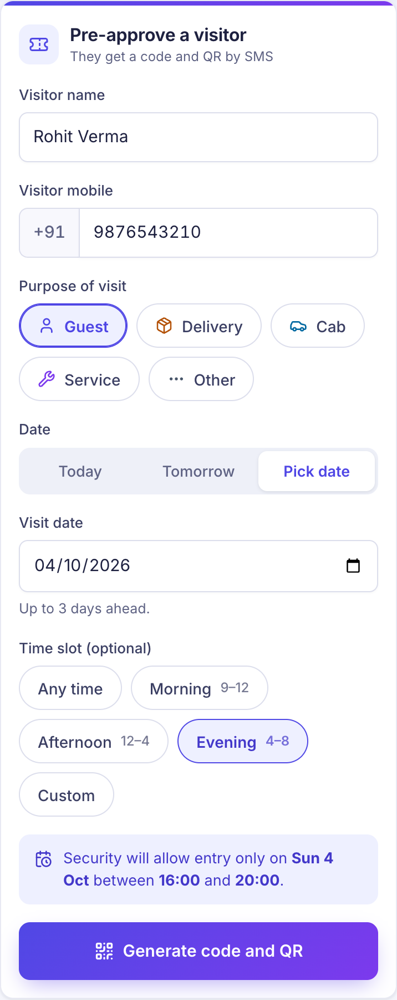
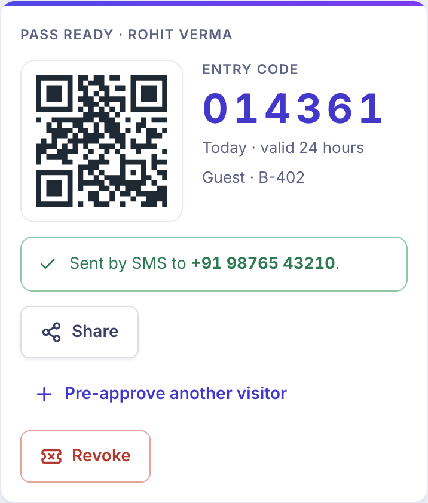
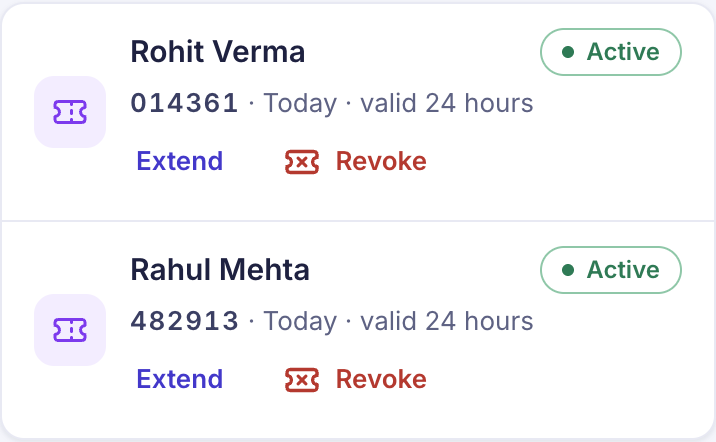
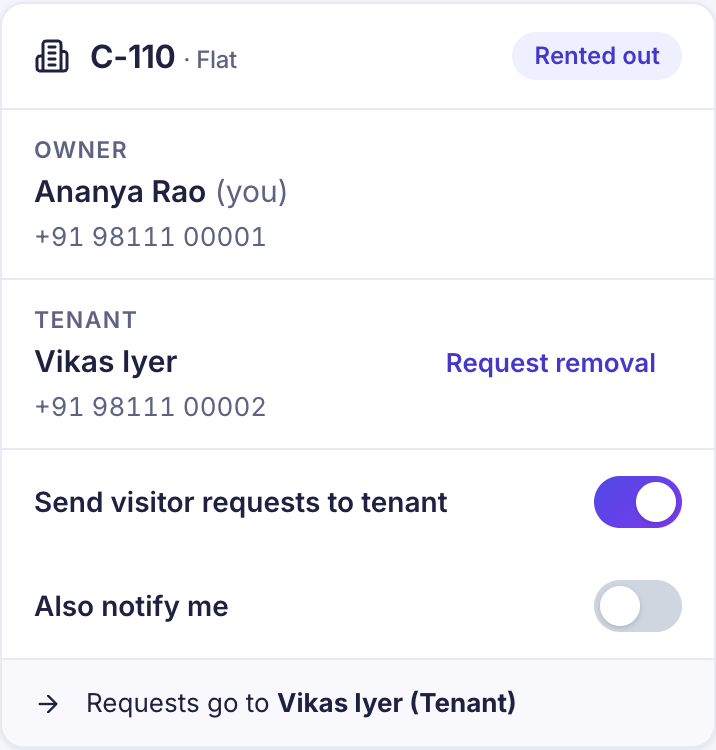

Essbel CHS
Member guide · Owners & tenants
Gatepass
Approve visitors, invite guests and hear from the society office — all from your phone.


Get started in a minute
- Open the Gatepass link shared by the society office.
- Enter the mobile number registered with the society.
- Type the 4-digit code you receive by SMS. That's it.
Your app at a glance
What's on your screen
Gatepass opens on Requests. If you own or rent more than one flat, tap the unit cards at the top (e.g. B-402 C-110) to switch between them.
📣NoticesMessages from the society office
🛡️SecurityCall the gate or send an alert
🔔NotificationsYour recent updates
👤AccountTheme and sign out
1
Signing in
- Open the Gatepass link from the society office on your phone.
- Enter your 10-digit mobile number and tap Send code.
- Enter the 4-digit code from the SMS. Gatepass signs you in.
Add it to your home screen so it opens like an app.
Android (Chrome): ⋮ menu → Add to Home screen. iPhone (Safari): Share → Add to Home Screen.
You stay signed in. To sign out, tap 👤 → Sign out (tap Cancel if you opened it by mistake).
Number not recognised? Ask the society office to add you. Only numbers in the society directory can sign in.

Enter your number

Type the SMS code
2
When a visitor is at the gate
Requests tab
When security logs a walk-in for your flat, the visitor appears under Waiting at the gate with their name, purpose, phone number and a photo if security took one. If Gatepass is open, a pop-up tells you straight away.
- Tap Approve to let them in, or Deny if you aren't expecting them.
- The visitor gets an SMS with your answer, and the guard sees it instantly.
- Below, Today at your flat lists everyone who came today. Tap Extend to let a regular visitor (maid, driver, relative) come back without asking again.
Only one person needs to respond. If someone else at your flat already approved, you'll see it update.
A delivery waiting for approval
3
Need security? Call or alert
🛡️ icon or Alert
- Tap Alert on the Requests screen (or 🛡️ at the top).
- Call the main gate (24×7) or the security supervisor directly, or
- Pick an alert type — Medical emergency, Suspicious person, Need help at home, Fire or smoke, Lift stuck, Other — add a short note and tap Send alert.
The guard on duty sees your name, flat and phone number immediately. You'll get updates when security is responding and when it's resolved.
In a life-threatening emergency, call 112 first, then alert the gate so they can guide help to your flat.

Contact security
4
Invite a guest in advance
Invite tab
Expecting someone? Pre-approve them so they walk straight in with a code.
- Enter the guest's name and mobile, and pick a purpose.
- Choose Today, Tomorrow or Pick date (up to 3 days ahead).
- Optional: choose a time slot — Morning, Afternoon, Evening or your own times. The gate only accepts the pass during that window.
- Tap Generate code and QR. Your guest gets a 6-digit code and a QR pass by SMS; you can also Share it on WhatsApp.
At the gate, the guest shows the QR or tells the guard the code.

Date and optional time slot

Pass ready and sent by SMS
Managing passes you've issued
- Extend — keep the same code working for more days (useful for house help or a visiting family member).
- Revoke — plans changed? The code stops working at the gate immediately, and the guest is told by SMS. You'll be asked to confirm first.
- Tags show each pass's state: Active, Scheduled, Used, Expired or Revoked.

Passes issued
5
Notices from the society office
📣 icon
Announcements such as water shutdowns, lift maintenance, meetings and drills appear on your notice board, with a pop-up if Gatepass is open. Some include a photo or PDF you can open.
- Urgent notices are outlined in red and pinned on your home screen. Please tap I've read this so the office knows you've seen it.
- Important notices stay pinned until you open them.
- Tap 📣 at the top any time to see all current notices.
Urgent notices may also come by SMS, so you're informed even when the app isn't open.
An urgent notice waiting for acknowledgement
6
Your units, tenants and profile
Units tab
If you're an owner with a tenant, you decide who gets visitor requests:
- Send visitor requests to tenant — your tenant approves their own visitors.
- Also notify me — you get the requests too.
- The line "Requests go to …" always shows who will be asked.
Adding or removing a tenant: tap Request admin to add tenant (or Request removal). The society office verifies and approves; you'll be notified. Your tenant then signs in with their own number.
If you're a tenant, the owner decides whether requests come to you.
My profile: tap Edit to change your name or mobile. A new number is confirmed with a code sent to that number, and it updates every flat you hold.

A rented flat's settings
7
Your visitor history
Activity tab
See everything that happened at your flat: arrivals, exits, approvals, and passes issued, extended or revoked, grouped by day. Choose Today, 7 days, 30 days or a Custom range. You only ever see your own flats.
Good to know
Questions members ask
I'm not getting visitor requests.
Open Units and check "Requests go to". If your flat is rented, the owner may have sent requests to the tenant. Keep Gatepass open (or add it to your home screen) so pop-ups can reach you.
My guest lost the code.
Open Invite → Passes issued and use Share to send it again, or tell the guard the code yourself.
I changed my phone number.
Update it in Units → My profile → Edit. You'll confirm the new number with a code.
A guest is coming every day this week.
Create one pass and tap Extend to the last day. The same code works for repeat entries.
Can I invite someone for a specific time?
Yes — choose a time slot. The gate won't accept the pass outside that window.
I invited someone by mistake.
Tap Revoke on the pass. It stops working immediately and the guest is informed.
Who can see my visitors?
Only the residents of your flat, security at the gate, and the society office. Visitor photos are never shared outside the society.
Can I use it on a computer?
Yes. Open the same link in any browser and sign in with your mobile number.
🏠
Need help with Gatepass?
Contact the Essbel CHS society office, or the main gate on +91 98000 12345 (24×7).